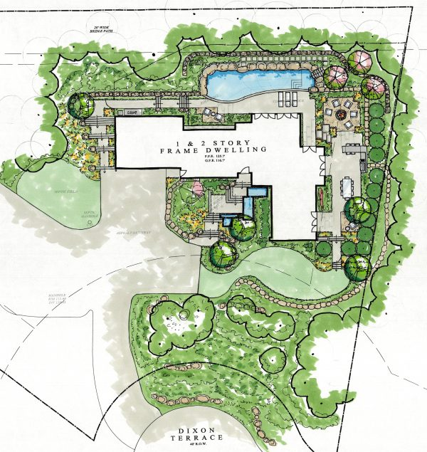

Cégünket azzal a céllal alapítottuk, hogy a kertépítés és parképítés területén olyan megoldásokat alkalmazzunk, melyek minden szempontból megfelelnek a modern kor támasztotta követelményeknek. Kreatív megoldásainkkal megfelelünk a vállalati és a magánszféra minden különleges kihívásának. Kertészmérnökök és tájépítészek közreműködésével adunk ötleteket egyéni igényeinek megvalósításához. A hagyományos módszerek mellett a legkorszerűbb számítástechnikai eszközökkel segítünk megtalálni kertjének IDEÁLIS arculatát. 3D látványtervekkel, szines fotókkal könnyítjük meg döntését,
hogy valóban azt kapja, amit megálmodott: Legyen szó minimalista modern kertről, hagyományos mediterrán kertről vagy nagyszabású parképítési projektről.
